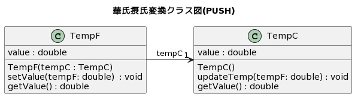
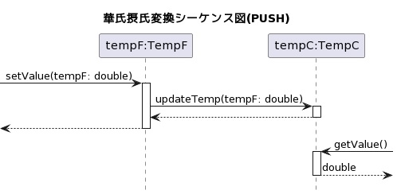
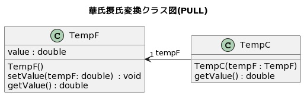
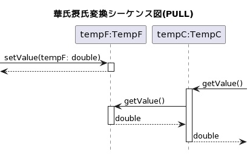

課題では，PUSH型のデータ転送をPULL型に変更するリファクタリング作業と，PULL型のデータ転送をPUSH型に変更するリファクタリング作業に取り組んでいただきます．
そこで，まずPUSH型とPULL型のデータ転送について解説します．
本実験では，2つのオブジェクト間のメソッド呼び出しを介したデータのやり取りをデータ転送といいます．
オブジェクト間のメソッド呼び出しでは，引数を使ってデータを送る方法と，戻り値を使ってデータを受け取る方法があります．
前者をPUSH型のデータ転送，後者をPULL型のデータ転送といいます．
例えば，オブジェクトAからオブジェクトBにデータxを転送することを考えます．
このとき，オブジェクトAがオブジェクトBのメソッドを呼び出して，引数を使ってBにxを送信するのがPUSH型の転送，
オブジェクトBがオブジェクトAのメソッドを呼び出して，戻り値を使ってAからxを受信するのがPULL型の転送です．
PUSH型とPULL型で呼び出しの方向は逆になりますが，いずれの場合も，オブジェクトAからオブジェクトBにデータxが転送されていることには変わりありません．
気温を華氏から摂氏に変換するプログラムを考えます．華氏から摂氏への変換式は以下の通りです．
摂氏[°C] = (華氏[°F] - 32) / 1.8以下では，華氏の気温を保持するクラスを TempF，摂氏の気温を保持するクラスを TempC とします．
まずは，TempF のインスタンスから TempC のインスタンスに華氏の気温をPUSH型で転送するプログラム例を示します．
PUSH型のデータ転送の場合，転送元のオブジェクトが転送先のオブジェクトのメソッドを呼び出してデータを送信するため，
TempF のインスタンスが TempC のインスタンスを参照するようにします．
そのため，クラス図は以下のようになります．

ここで，新しい華氏の温度は，TempF クラスの setValue() メソッドで設定されるものとします．
このときPUSH型のデータ転送では，即座に更新された華氏の温度のデータが TempC のインスタンスに送信され，摂氏の温度も更新されます．
ここで華氏の温度データを送るために呼び出されるのが，TempC の updateTemp() メソッドです．
updateTemp() メソッドが呼ばれると送られてきた華氏の温度が即座に摂氏に変換され，TempC 内のフィールド value に記録されます．
この流れをシーケンス図で表すと以下のようになります．

全体のソースコードを下記のリンク先に示します．
PUSH型転送の華氏摂氏変換プログラム(別タブで開きます)
次に，TempF のインスタンスから TempC のインスタンスに華氏の気温をPULL型で転送するプログラム例を示します．
PULL型のデータ転送の場合，転送先のオブジェクトが転送元のオブジェクトのメソッドを呼び出してデータを戻り値として受け取るため，
今度は TempC のインスタンスが TempF のインスタンスを参照するようにします(PUSH型と逆方向になります)．
そのため，クラス図は以下のようになります．

PULL型の場合も新しい華氏の温度は，TempF クラスの setValue() メソッドで設定されるものとします．
しかしながらPULL型のデータ転送では，華氏の温度が更新された時点で摂氏の温度は更新されません．
摂氏の温度を調べる TempC クラスの getValue() メソッドが呼ばれたタイミングで TempF クラスの getValue() メソッドが呼び出され，
戻り値として返された最新の華氏の温度を元に摂氏の温度がその場で計算され，getValue() メソッドの戻り値として返されます．
そのため，TempC クラスの内部に最新の摂氏を記録するための value フィールドを持つ必要はありません．
この流れをシーケンス図で表すと以下のようになります．

全体のソースコードを下記のリンク先に示します．
PULL型転送の華氏摂氏変換プログラム(別タブで開きます)
それでは実験を始めます．
こちらからお進みください．課題A1に取り組む前に1つめのプログラムの概要の説明を行います．